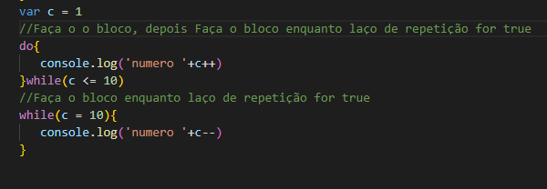

Repetições (Parte 1)
Nessa aula veremos laços de Repetições, while e Do/while
- While
//Faça o bloco enquanto laço de
repetição for true exemplo:
while(c <= 10){
console.log('numero '+c++)
}
Ele exucuta uma vez o bloco, depois entra no laço, e só para quando for falso
//Faça o o bloco, depois Faça o bloco
enquanto laço de
repetição for true, exemplo:
do{
console.log('numero '+c++)
}while(c <= 10)
exucuta o bloco em quanto ele for true
